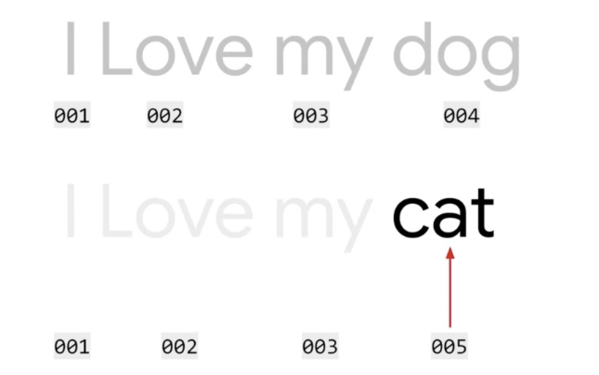
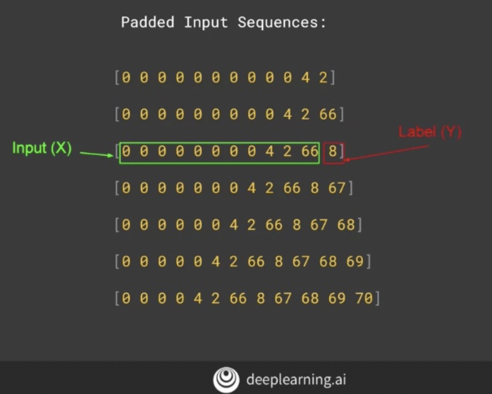
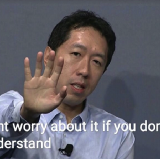

Review: Natural Language Processing in TensorFlow, Tensorflow in Practice Specialization, Coursera
Dec/11/2019 08:11 Data Science | Mooc
A thorough review of this course, including all points it covered and some free materials provided by Laurence Moroney
Patrick L.
Dec 11 · 4 min read

Summary:
The knowledge point of this course(Natural Language Processing in Tensorflow) is organized in strict chronological order as to how the instructor designed this course. Also, include some colab notebooks provided by Laurence Moroney.
What you see below is what you can get from this course.
Week1 Sentiment in Text:
In the first week, Moroney talked about:
- Tokenize words, Word-based encoding
- Text to sequence & Padding
- How to use APIs to do things listed above (Tensorflow and Keras).
- Two projects Sarcasm in News Headlines Dataset by Rishabh Misra, and BBC text archive. In these projects, you would have a chance to practice what you have learned in the first week.

Word-based encoding
Week2 Word Embeddings
Today in the world of applied NLP, word embeddings have proved to be one of the most powerful and useful ideas to help teams get excellent performance.
Moroney mentioned that there’s a library called TensorFlow Data Services or TFDS for short, and that contains many data sets and lots of different categories.
- The dataset used in week2 is IMBD reviews dataset.
- You would learn how to train a classification neural network from scratch with Tensorflow, Numpy, and Pandas.
- Laurence also talked about technical skills for model fine-tuning.
- You would learn how to plot the result and understand the performance of your NN
- The most interesting I learned this week is how to pull out the embedding layer and use projector.tensorflow.org to visualize your word embeddings.

Week3 Sequence Models
Sentiment can also be determined by the sequence in which words appear. For example, you could have ‘not fun,’ which of course, is the opposite of ‘fun,’ that’s why sequence models are very important in NLP.
In this week, you would get:
- How to implement an LSTM model (Long-Short-Term-Memory) RNN.
- How to do it single directional and bidirectional.
- Measure the performance.
- How to implement a Convolution NN in the NLP project.
- Provided notebooks below to help students understand sequence models better.
IMDB Subwords 8K with Multi-Layer LSTM
IMDB Subwords 8K with 1D Convolutional Layer
Sarcasm with Bidirectional LSTM
Sarcasm with 1D Convolutional Layer
MDB Reviews with GRU (and optional LSTM and Conv1D)
- The exercise this week is for helping the student to explore overfitting in NLP and find the reason of overfitting.

Week4 Sequence models and literature
Week4 Laurence talked about the prediction in NLP, which is text generation. Given a body of words, you could conceivably predict the word most likely to follow a given the word or phrase, and you would learn to build a poetry generator.
Find the link to generating text using a character-based RNN here.

My subjective opinion on this course
As the third course in Tensorflow in Practice Specialization, Laurence goes through all necessary NLP skills and tricks with Tensorflow and Keras.
However, from my point of view, the knowledge given in this course is too basic, there are so many things that NLP can do, like a chatbot. Because the target student of this specialization is SDEs, I think this course should definitely include more advanced NLP applications and also should reduce the time with basic pieces of knowledge such as: how to tokenize works. For anyone who wants to learn the basic knowledge, he should finish Andrew’s Deep Learning Specialization at first.
As usual, you can find all the materials in my Github repo. This is a treasure repo, and welcome to contribute this repo if you are also a life-long learner like me.

WRITTEN BY
Patrick L.
In me, a rabbit wants to eat a tiger.
More From Medium
More from Patrick L.
Into to PCA, K-means Clustering | Unsupervised Learning Algorithms
Patrick L. in Towards Data Science
Dec 3 · 4 min read
blog comments powered by Disqus